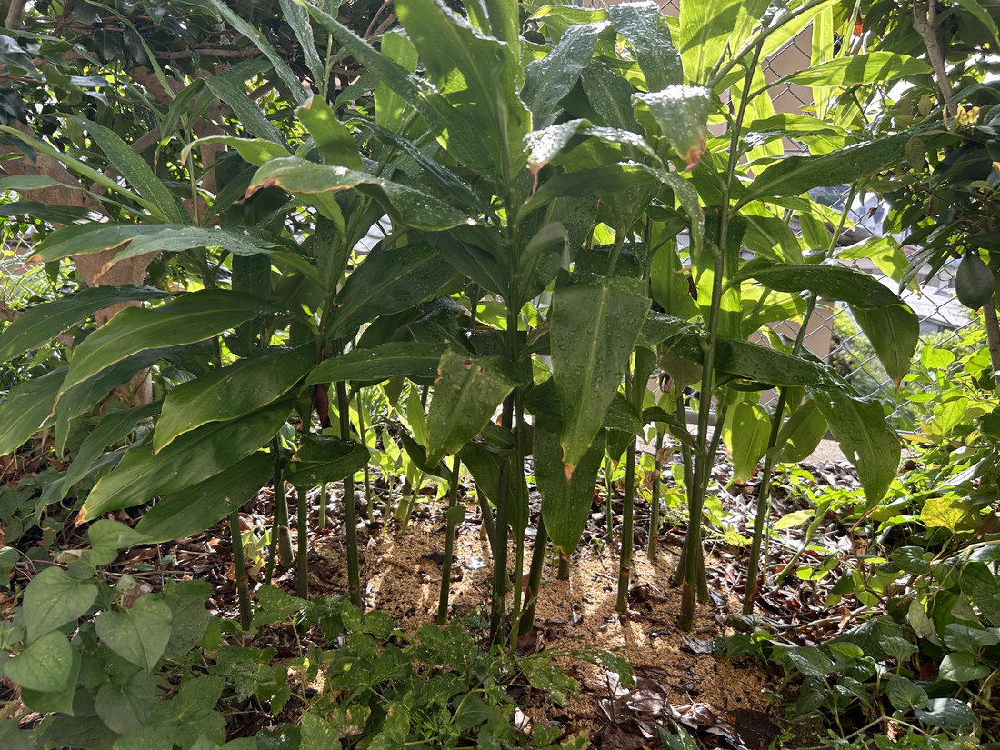

地図を読み込んでいるよ…
🔍 写真も地図も、押しているあいだ拡大して見られるよ（スマホは指を置いてすこし待ってね）。
🌍 の地図＝この子がもともと自生している場所を緑に。⚠出典で書きぶりが違う。「日本を含む東アジア原産といわれ、各地に自生している」とするもの（Wikipedia）と、「在来種又は帰化種」として中国原産説をあげ「古代に持ち込まれ、古くから栽培され、人家の周辺に野生化した」とするもの（三河の植物観察）がある。分布は本州・四国・九州。
⚠⚠出典で書きぶりが違うんだ。「日本を含む東アジア原産といわれ、各地に自生している」とするもの（Wikipedia）と、「在来種又は帰化種」として中国原産説をあげ、「古代に持ち込まれ、古くから栽培され、人家の周辺に野生化した」とするもの（三河の植物観察）がある。⭐だから日本・中国・朝鮮半島をまとめて塗った。⚠日本の分布は本州・四国・九州だけど、地図は県単位なので全国が塗られているよ。⭐日本の栽培種は5倍体で果実や種子ができにくい――ふえるのは地下の根茎からなんだ。⭐決めきれないときは、決めきれないと書く——162 ヤマシャクヤク・175 シソと同じやり方だね。
⚠ 地図は国（日本と中国だけ県・省）までしか塗れないから、ほんとうの分布より広く見えていることがあるよ。地図はだいたいの場所。正確なところは、上の文を見てね。
ミョウガ（茗荷）
Zingiber mioga (Thunb.) Roscoe
別名 · ハナミョウガ（花茗荷）／ミョウガの子／ミョウガタケ／ 原産 · ⚠出典で書きぶりが違う（下の🌍を見てね）／ 見どころ · ⭐⭐食べているのは「花のつぼみ」。しかも株元の、地面のすぐそばから出てくる
ショウガ科 · Zingiberaceae（ショウガ属 Zingiber・ショウガ目 Zingiberales）── ⭐⭐この図鑑で初めてのショウガ科。070 チユウキンレン（バショウ科）と同じ目
燻太さんの言葉「実家では、収穫してミョウガ酢を作ったりもしているらしいよ。」……⭐畑から食卓までが、一本につながっている子。
名前と学名の由来 ── 名前を、荷なう
- ⭐⭐「茗荷」という字には、お話がついている。──釈迦の弟子の周利槃特（しゅりはんどく）は、自分の名前さえ忘れてしまう人だった。名前を書いた札を背負って歩いたけれど、それでも忘れた。⭐その人の墓から生えた草を「名を荷（にな）う」草として「茗荷」と名づけた、という故事だよ。
- ⚠そこから「ミョウガを食べると物忘れがひどくなる」という言い伝えが生まれた。⚠⚠でも、これは俗説。⭐むしろ香り成分の α-ピネンには、頭をスッキリさせたり、食欲を増やしたりするはたらきがあるとされているんだって。──⭐言い伝えと、まるで逆なんだね。
- ⭐⭐名前の由来には、もうひとつの説がある。⭐「兄香（せのか）」＝ショウガ／「妹香（めのか）」＝ミョウガが転じたもの、という説。──⭐同じショウガ属の兄弟を、香りの強さで「兄」と「妹」に分けた、という見かたなんだ。
- ⚠どちらが本当かは、決めきれない。⭐この図鑑のやり方どおり、両方書いておくね（162 ヤマシャクヤク・173 ヒガンバナと同じ）。
- 学名 Zingiber mioga＝⭐種小名がそのまま「ミョウガ」。⭐日本語が、そのまま世界の名前になった子だよ。
この植物のこと
- ⭐ショウガ科ショウガ属の多年草。⭐⭐この図鑑では、ショウガ科は初めてだよ。070 チユウキンレン（バショウ科）と同じショウガ目の仲間。
- ⭐⭐⭐世界でミョウガを食べているのは、日本だけなんだって。⭐あの香りとしゃきしゃきを「おいしい」と思ったのは、日本の食卓だけだったんだね。
- ⭐食べているのは「花のつぼみ」。──株元の地面近くに、タケノコのような形のつぼみ（花穂）が出てくる。それが「花みょうが」「みょうがの子」。⭐若い偽茎を日に当てずに白く育てたものは「みょうがたけ」というよ。
- ⭐花は淡黄色の一日花。花期は8〜10月で、株元から数個ずつ咲く。──⭐つまり、つぼみのうちに採ってしまうから、花を見ないまま食べていることが多いんだ。
- ⚠⚠日本の栽培種は5倍体で、果実や種子ができにくい（三河の植物観察）。⭐だから、ふえるのは地下の根茎から。──⭐053 シャガや173 ヒガンバナと同じで、種でふえない子なんだね。
- ⭐日陰でよく育つ。写真の株も、フェンスぎわの木かげにいるよ。
同定について ── ⚠ ヤブミョウガは、ミョウガではない
- ⭐決め手は、育てている人の証言。──ヒロキさんのご実家で「ミョウガ」として育て、収穫してミョウガ酢にしているもの。⭐畑の人が知っていることは、写真より確かな一次情報だよ（088 イキシアで燻太さんに教わったこと）。
- 写真から言えること＝披針形の細長い葉が、茎に2列にならんでつく／地上の「茎」に見えるものは、じつは偽茎（葉のさやが重なった筒）／株が地下でつながって、たくさんの偽茎が立ちならぶ。
- ⚠花穂と花は、この写真には写っていない。⭐だから「写真だけからの確定」ではない、と正直に書いておくね。
- ⚠⚠⚠まぎらわしい子がいる＝ヤブミョウガ（藪茗荷）。──⭐名前も葉の形も似ているけれど、まったく別の科なんだ。
・ヤブミョウガ＝ツユクサ科（028 ムラサキツユクサの仲間）。ミョウガ＝ショウガ科。
・⭐「葉がミョウガに似ていて、藪に生えるから」ヤブミョウガ。⭐名前は「似ている」と言っているだけで、「仲間だ」とは言っていないんだよ。
・⭐この図鑑では、ヤブミョウガは028 ムラサキツユクサのおまけとして「探したい」に入っている。⚠見つけても、この176とまちがえないでね。 - ⚠もうひとつ、正直に：出典（三河の植物観察）には「高さ20〜37cm」とあるけれど、⚠写真の株は、それよりずっと高く見える。⭐でも写真にはものさしが写っていないので、ぼくには測れない。⚠だから「出典にはこう書いてある」とだけ書いておくね。
⭐⭐ 地面から出ているのは、茎じゃない ── 偽茎のこと
- ⭐写真をよく見て。地面からまっすぐ立ちあがっている、緑色の「茎」。──⚠⚠あれは、茎じゃないんだ。
- ⭐⭐偽茎（ぎけい）＝葉のさや（葉鞘）が何枚も重なって、筒のようになったもの。⭐本当の茎は、地面の下を横に這っている（根茎）。
- ⭐⭐⭐そして、これが070 チユウキンレンとつながる。──チユウキンレンもバショウ（バナナの仲間）も、「幹」に見えるものは偽茎なんだ。⭐同じショウガ目の仲間が、同じ作りを持っている。
- ⭐だから花は、偽茎のてっぺんからは出てこない。⭐地面の下の根茎から、直接、株元に顔を出す。──⭐食べるところが「株元」にあるのは、そういうわけだったんだ。
- ⭐写真の株元に、うすい黄色のおがくずのようなものが敷いてあるでしょう。⚠これが何のためかは、ぼくには分からない（マルチかもしれないし、別の理由かもしれない）。⭐でも、収穫するのは、まさにこのあたりだよ。
⭐ ミョウガ酢 ── 収穫のさきにあるもの
- ⭐ヒロキさんのご実家では、このミョウガを収穫してミョウガ酢を作っているんだって。
- ⭐⭐この図鑑には、育てている子も、食べている子もいる。でも「収穫して、加工して、保存する」ところまで聞けた子は、めずらしいんだ。──⭐畑から食卓までが、一本につながっている。
- ⭐ミョウガの赤紫は、酢に漬けるときれいなピンクになるといわれるよ。⚠これは酸によってアントシアニンの色が変わるから、と考えられるけれど、⚠ミョウガについての出典は当てていない。⭐でも、この図鑑では015 ホーリーバジルで、クエン酸で紫→赤に変わるところを顕微鏡で見たよね。⭐同じことが、台所の瓶の中でも起きているのかもしれない。
- 📌宿題＝⭐ミョウガ酢の写真も、いつか見てみたいな。
参考：三河の植物観察「ミョウガ」（Zingiber mioga (Thunb.) Roscoe／ショウガ科 Zingiberaceae ショウガ属／在来種又は帰化種／本州、四国、九州／中国(中国原産)／古代に持ち込まれ、古くから栽培され、人家の周辺に野生化した／日本の栽培種は5倍体で果実や種子ができにくい／多年草／高さ20〜37cm／根茎は帯黄色、横に地中を這い／葉身は披針状楕円形〜線状披針形、長さ20〜37cm、幅4〜6cm／花序は根茎から生じ、楕円形／唇弁は卵形、長さ約3cm、中裂片は黄色で縁が白色／花期は8〜10月）／Wikipedia「ミョウガ」（ショウガ科ショウガ属の宿根性の多年草／日本を含む東アジア原産といわれ、各地に自生している／食用にするのは日本だけである／花穂の「花みょうが」／幼茎を遮光して軟白栽培した「みょうがたけ」／地面から出た花穂が花開く前のものは「みょうがの子」／地上部に見える葉を伴った茎状のものは偽茎である／花は淡黄色の一日花で、株元の地面近くに長さ10cmほどのタケノコ状の蕾をつけて数個咲く／独特の香り成分は α-ピネン／α-ピネンには、頭をスッキリさせたり、食欲増進、血液の循環をよくするなどの作用がある／釈迦の弟子の周利槃特が名前を忘れてしまい、墓から生えた草を「名を荷う」ことから「茗荷」と名付けた／「兄香（ショウガ）」に対応する「妹香（みのか）」が転訛）